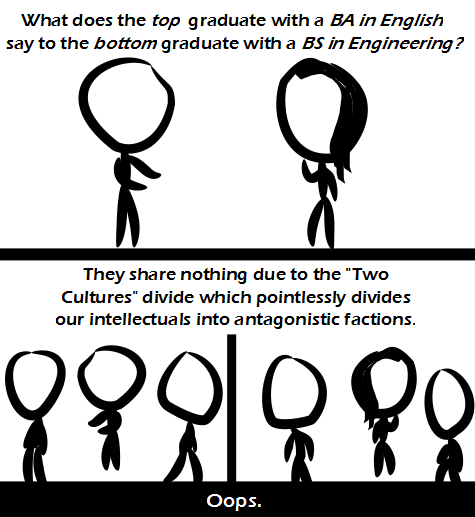

Comic JK 918
When I Feel Like It
⇤
<
?
>
⇥

⇤
<
?
>
⇥
Forum
.
RSS
.
Digg
.
Facebook
.
Reddit
.
Twitter
.
Stumbleupon
Insert your shaft into number 918 here. Please, no grand spamming, exciting trolling, beating cat meat or receiving BAs in English. What does the English major who enjoys reading say to the Engineering major who hates math? >Sucker! - The same as if it was the other way round. Why would a Reading major that hates English talk to a Math major that hates engineering? >Because! - The same as if it was the same way round. >>a Major from Reading ? is this the opening of a joke or a reality TV series... ? >>>I think they only have that in the UK. [DELETED] >Oh, is reddit active now? I got tired of checking back every comic just to see "0 comments" >> People only come here to troll this box or get angry about trolls. It's quite obvious. > Waa ***************************************** mommy! > implying that English majors are "intellectuals" >> smirk "English" "majors" >>>Proving that English is the hardest language to learn... Apparently people have to major in it in order to learn it good... or is that "well"... It's all well and good... -Eddie Brill (paraphrased) >>over on Wikipedia, there is an argument over a recent "Featured Article" about someone named "Fanny Imlay"... when it is pointed out that the article is actually mostly about people other than Imlay, and doesn't have a valid summary, the "literature" people seem incapable of acknowledging those observations could even possibly be valid... I have seen that sort of thing happen so many times offline, that I wonder if the "Two cultures" is something deeper: "science" people assume an objective reality of facts while "literature" people prefer a subjective reality in which their interpretation trumps fact ? >>>Not really. Literati almost always become myopic, and often consciously liars, because it is sooo easy to "mold" what you say/write according to your will. I believe this is why most humanities depts. are just clubs for people who like to gossip and prose. The fight for grants and scholarships reduce to pure and simple nepotism, with all the teabagging that entails. >>>>erm... hold on... you say you disagree, but it seems you agree... surely the phrase "easy to mold what you say/write according to your will" does pretty much match the notion of people for whom interpretation trumps fact ? >>>>>I was also baffled by the paradox. Unless it's a subtle confession? >>>>>>My bad. I started writing something, changed afterwards, but did not change the first sentence. (I was going to comment that literati are generally self deluded about the validity of their "interpretative" world views, so it was unfair to claim that they _prefer_ (consciously) to live in such a limited intellectual world. While writing, I noticed that this opinion of mine was probably naive, and it is more likely that literati lie consciously, and rationalize afterwards). >>>>>>>well when I said "prefer", I intended that word to cover both conscious choice and "I don't know why I like it, I just do"... but as this seems uncomfortably close to subjective interpretation, I suggest it's time to conduct experiments... So the man is the top and the female is the bottom? That's kinda cliché, I hope they switch every now and then. >THATS NON-SEXIST! >I dunno ... I prefer to be on the bottom. Less work. >>you're assuming it isn't a man with long hair, and a woman with short hair... or two men... or two women... or... What does the Literature graduate say to the Science/Engineering graduate ? They compared their knowledge of Tom Baker era Dr Who stories... ( You may be thinking that isn't particularly funny, but it really happened... :) ) >Or they talked about THE SHIELD because Vic Mackey will beat your <PROFANITY>! >>nope, we definitely discussed the Tom Baker era Dr Who... and whether he ought to have touched the wires together... >>>To be fair, the question was asked in the third person, and you're answering in the first. The Shield is still the more likely answer. >>>>your insistence on "The Shield" shows you're assuming this particular discussion took place in the US... it didn't... >>>>>That only means you didn't watch it on TV. >>>>>>Are you a literature graduate by any chance ? You're insisting "The Shield", despite the fact the person has said "Dr Who", and has also implied "The Shield" is not as popular in their location ( whether via TV or any other delivery form ) as it may be in yours... >>>>>>>Apt! But no. I was simply basing my response on my own personal experience. Again, the original premise was a generic engineer/literatition. So I see experience as being even equally weighted as the OP's. yeah, um. stick figure comics are OK because we grok that the authors are lazy and we don't mind cut corners if we get our funny on. comics with only a token attempt at humor? that's laziness past the point of being admirable. I share no dialog with your mother because of cultural divides, but that doesn't stop her from sucking my dick.